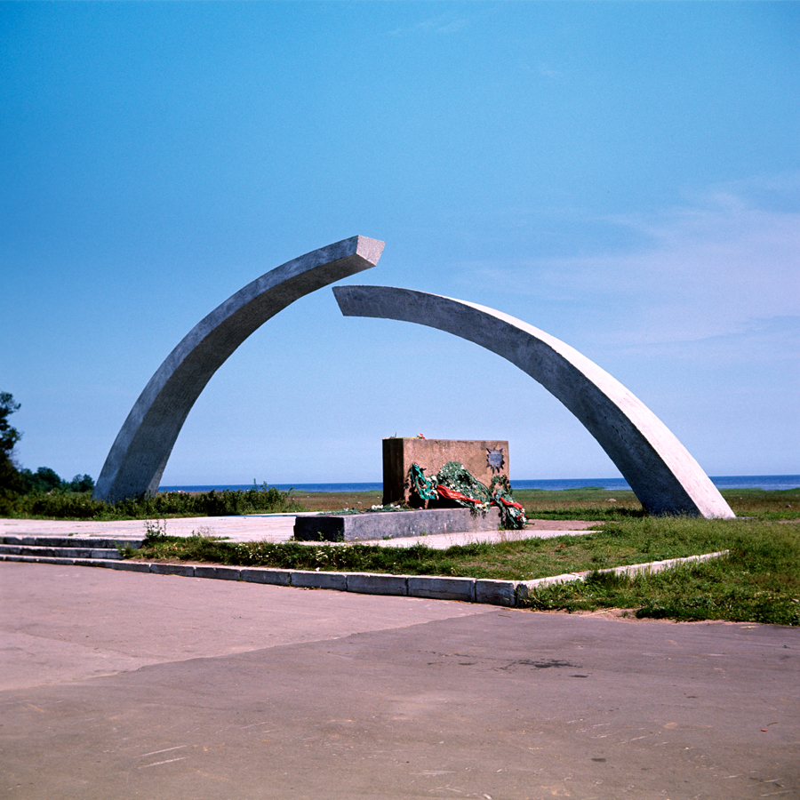
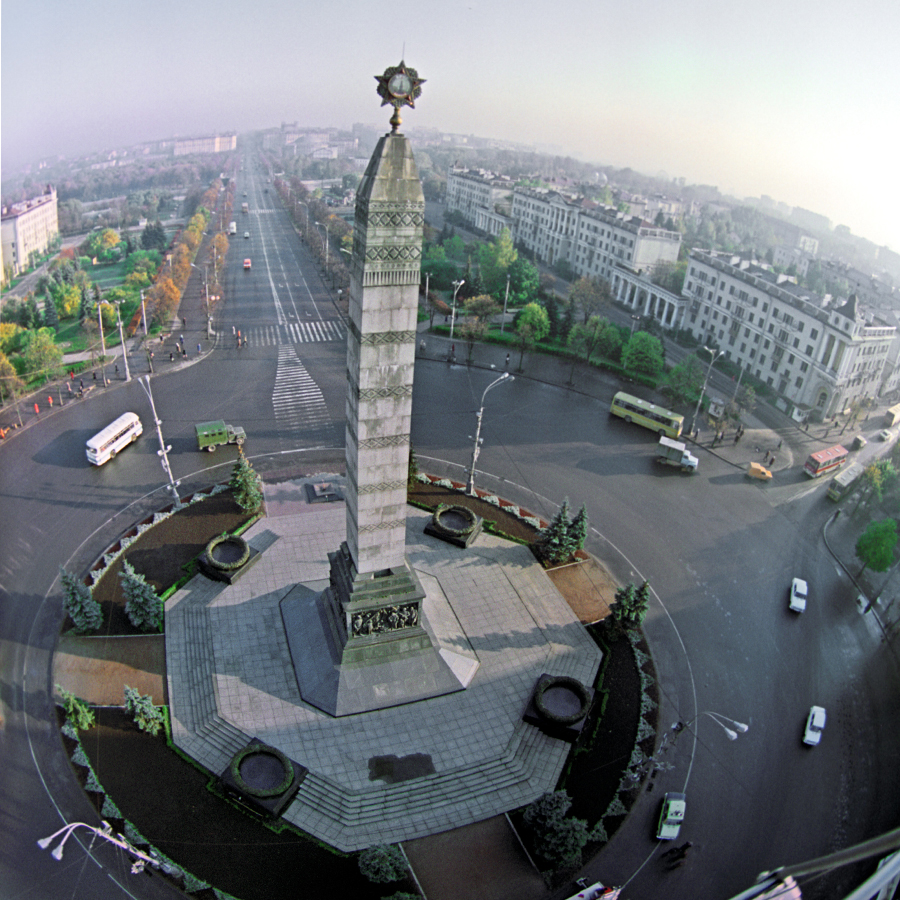
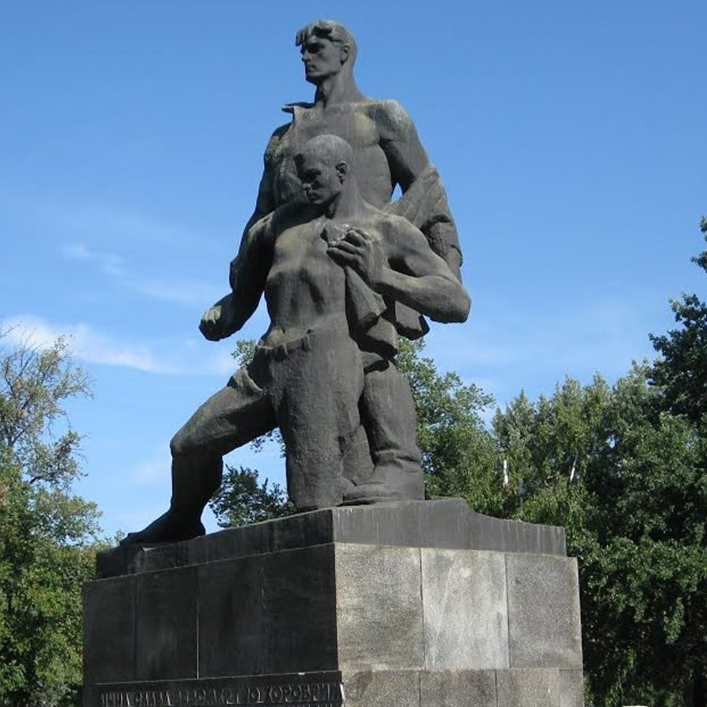
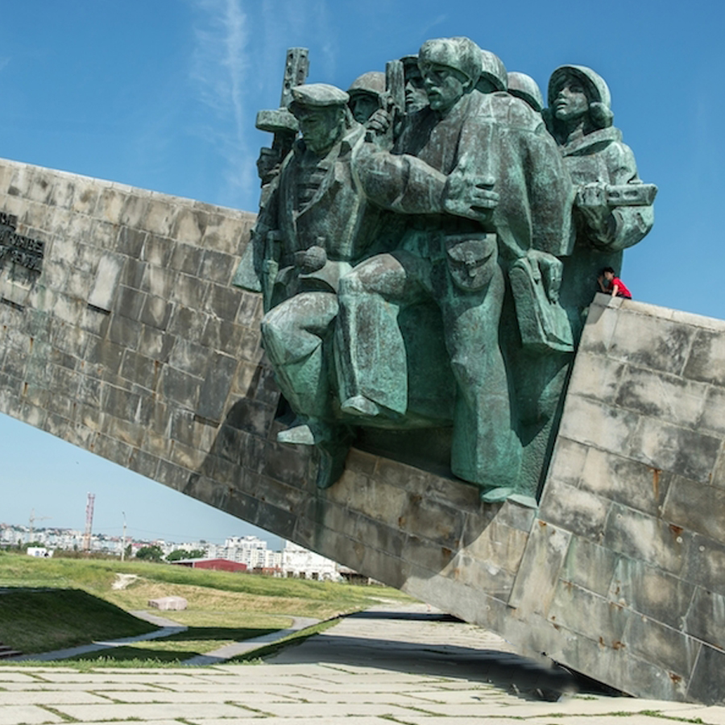

Города-герои
Когда в июне 1941 года фашистская Германия обрушила на нашу страну всю мощь своих армий, на их пути могучими бастионами встали советские города. Кровопролитная борьба шла буквально за каждую пядь земли на подступах к ним, за каждый квартал и за каждый дом.
Особо отличившимся городам за массово проявленные мужество и героизм их защитников впоследствии было присвоено высшее звание «Город-герой».

Москва
В агрессивных планах фашистской Германии захват Москвы имел первостепенное значение, так как именно с падением столицы связывалась полная победа немецких войск над СССР.
Узнать больше
Ленинград
Ленинград был особым городом для Советского Союза, поэтому в планах гитлеровского командования было полное уничтожение города и истребление его населения.
Узнать больше
Минск
Минск с первых дней Великой Отечественной войны оказался в самом центре трагедии. Городские части гарнизонной армии подпали в город 28 июня 1941 года.
Узнать больше
Брестская крепость
Брестская крепость приняла на себя первый удар фашистов 22 июня 1941 года. Ее защитники проявили невероятное мужество.
Узнать больше
Керчь
Керчь выдержала многочисленные оккупации и освобождения, став символом стойкости.
Узнать больше
Киев
Киев стал одним из первых городов, принявших на себя удар врага. Его защитники проявили несгибаемую стойкость и мужество.
Узнать больше
Мурманск
Мурманск выдержал многочисленные бомбардировки и артобстрелы, защищая важный порт и железнодорожную ветку.
Узнать больше
Новороссийск
Новороссийск выдержал тяжелые бои за каждый метр земли. Город-порт на Черном море.
Узнать больше
Одесса
73 дня длилась героическая оборона Одессы. Город стал символом стойкости и мужества советского народа.
Узнать больше
Севастополь
250 дней длилась героическая оборона Севастополя - главной базы Черноморского флота.
Узнать больше
Смоленск
Смоленское сражение сорвало планы гитлеровского командования на молниеносную войну.
Узнать больше
Сталинград
Сталинградская битва стала коренным переломом в ходе Великой Отечественной войны.
Узнать больше
Тула
Тула выстояла в тяжелых оборонительных боях под Москвой, не дав врагу окружить столицу с юга.
Узнать больше